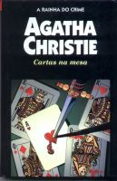

Cartas na Mesa
Cards on the Table
Para investigar o inesperado assassinato do extravagante Mr. Shaitana durante uma partida de bridge, ninguém melhor do que seus próprios convidados: quatro detetives particulares — e entre eles se encontra o melhor de todos, Hercule Poirot. O problema é que sobre cada um desses homens paira a sombra de crimes não esclarecidos no passado. Neste jogo de cartas marcadas, em que todos são virtualmente suspeitos, caberá ao genial detetive belga dar a cartada final.
Gabriela Pires: O ricaço Mr. Shaitana, que tem costumes um tanto bizarros, convida para um jantar em sua residência quatro detetives particulares (entre eles Hercule Poirot) e quatro assassinos que nenhum juiz conseguiu alcançar por falta de provas. E foi nessa noite que Mr. Shaitana assinou seu decreto de morte, foi assassinado por uma das oito pessoas ali presentes, mais provavelmente pelos quatro assassinos impunes. Hercule Poirot desvenda o crime descobrindo o assassino onde ninguém poderia imaginar.